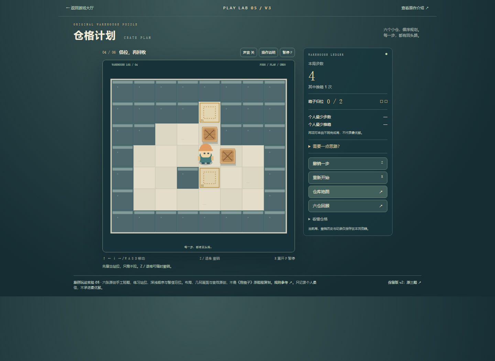
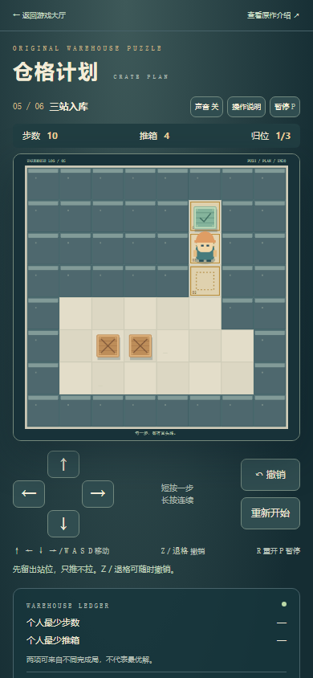
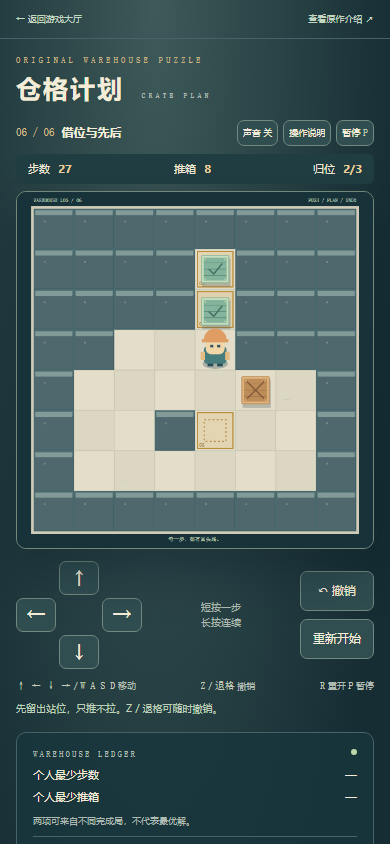
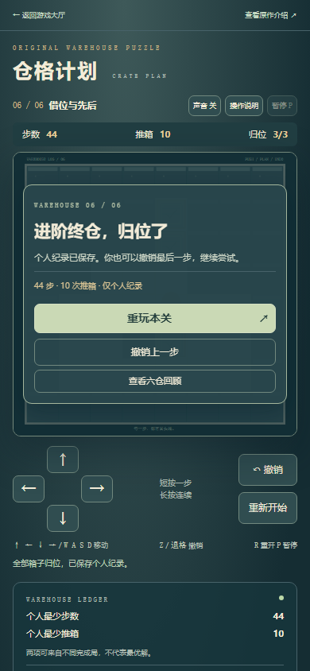
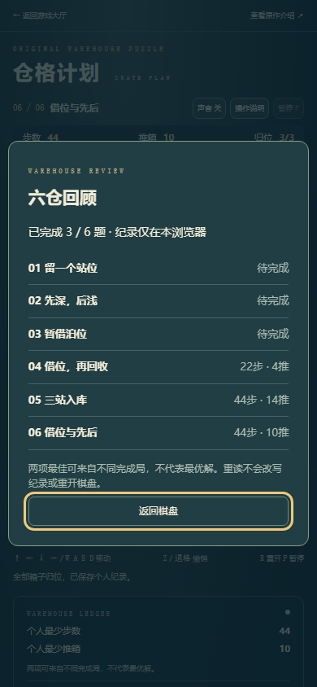

保留原三题和原v2，新增借位回收、深浅顺序、组合三题。全部可选；下一仓、末题重玩、撤销与刷新沿用现有规则。六仓回顾按实际纪录显示已完成题数，不把只过终题当作六题全通。大厅仓格卡片和对照页均有可选v3入口，40项目录不变。
| 本轮新增题 | 普通键盘实际完成 | 布局体现的策略 |
|---|---|---|
| 04 借位，再回收 | 22步 · 4推 | 先把一箱放到右侧借位，上方箱归位后再回收。 |
| 05 三站入库 | 44步 · 14推 | 经过浅目标继续送深处，之后填中间和入口。 |
| 06 借位与先后 | 44步 · 10推 | 借位让出纵向通道，按深浅交付，再收回借位箱。 |
Chromium147普通键盘，按公开候选作者解法逐步操作；未注入棋盘、完成态、时间或新档。属于已知解法回放，不是盲解或真人难度验收。第4题普通UI连续22次撤销回初盘；第5题撤销后刷新，继续撤销并补最后四步；第6题胜后刷新、撤销再推、重玩当前第6题和纪录保留。回顾只显示本次实际完成的3/6，原三题未重复通关。
桌面及390CSS截图、键盘选关和返回后的筛选/焦点通过；触控为浏览器原生模拟的方向短按、取消不连走、撤销，非真机。另列有效v2旧档导入、旧字节保留与坏档/配额/读权限故障fixture；不把这些当作自然游玩。
复用候选生产引擎解法与撤销证据，没有重做搜索或宣称唯一/最优解。新版本引擎、渲染器及原三题未改。首轮脚本未等待异步观察条件，输入过快排队；修正后完成前两题。下一仓一次键盘激活未被确认，等待按钮可用后从同一真实档接续第6题，未重刷前两题。
核心浏览器证据 · 针对性模型检查 · 复用候选解法、逐推及撤销证据 · 独立浏览器旧档与故障fixture · 可重跑模型检查。真人乐趣、难度感受、声音听感、物理设备触控和性能未验收。




